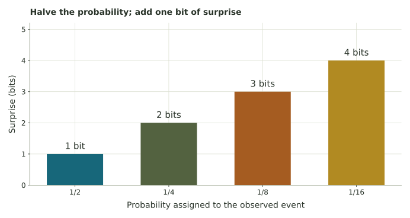

Score a prediction by its surprise.
Use powers of two to connect probabilities, bits, average token loss, perplexity, and an idealized coding length.
How can we score the probability assigned to what happened?
In the learning application, a predictor produced a number and we calculated target minus prediction. A text predictor instead assigns probabilities to possible next tokens. A token is a unit of text used by a model; it may be a word, part of a word, or punctuation.
Suppose the observed next token is “rain.” Model A assigned it probability 1/2; Model B assigned it 1/8. The outcome was less surprising under A. We can score the probability given to the token that actually occurred, then average that score over a sequence. These probabilities and text examples are invented for instruction.
Where this fits
This is a scoring rule, not a complete training algorithm. During training, information from a loss can guide later parameter changes, closing a feedback loop. A lower score on one token is evidence about that token only.
Use powers of two before logarithms
Information surprisal is \(I=-\log_2(p)\) bits for an observed event assigned probability p. Read this through familiar powers: if \(p=1/2^k\), then \(I=k\). The probability 1/8 is \(1/2^3\), giving 3 bits. The logarithm is the inverse question, “which power of two gives this reciprocal?”

A certain event, p = 1, has surprise 0. An event given p = 0 has infinite surprise if it occurs; the model assigned no probability to an observed outcome. The interactive calculator requires a positive probability so its finite score can be displayed.
Try 1/2, 1/8, 1/32, and 1. Then try 0 and explain why it has no finite score.
Average the scores of the observed tokens
For four observed tokens, suppose a model assigned probabilities 1/2, 1/4, 1/8, and 1/4. The surprisals are 1, 2, 3, and 2 bits. The total is 8 bits and the mean is 2 bits per token. This empirical average negative log probability is commonly called cross-entropy loss for the observed sequence.
Perplexity is \(2^H\) when the mean score H is measured in bits per token. With H = 2, perplexity is 4. For intuition, a uniform prediction over four possible alternatives has surprisal 2 bits for whichever occurs. Perplexity is an effective uncertainty scale, not a literal count of a model’s vocabulary or proof that every prediction offered four choices.
1. Convert three probabilities to bits
2. Score the four observed tokens
Their surprises are 1, 2, 3, and 2 bits.
3. Compare two models on the same observed token
Model A assigned its observed token probability 1/2; Model B assigned that same token probability 1/8.
4. Convert an average to perplexity
5. Connect the score to idealized coding
Under a known probability model, surprise gives an idealized coding-length scale. For long sequences, coding methods can approach the total negative log probability, apart from coding overhead. An individual fractional-bit score is not a literal fraction of a stored bit for a single isolated token.
Keep three information questions distinct
| Quantity | What is averaged or scored? | Example |
|---|---|---|
| Surprisal | One observed outcome under a model | p = 1/8 gives 3 bits |
| Entropy | Surprise averaged over the source’s possible outcomes | A fair coin has entropy 1 bit per toss |
| Empirical cross-entropy loss | Model surprise averaged over observed outcomes | Four token scores 1, 2, 3, 2 average to 2 |
These quantities connect prediction and coding. They do not measure truthfulness, fairness, usefulness, or understanding by themselves. Training software often uses natural logarithms, giving nats rather than bits; changing the logarithm base changes units, not which positive-probability prediction has the lower loss.
Primary source for information and coding: Claude Shannon, A Mathematical Theory of Communication (1948). Use the timeline’s coin experiment to compare entropy with a single observed surprisal.